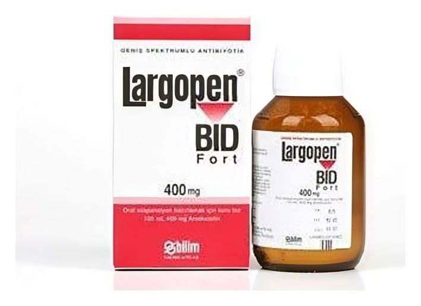

Largopen 500 mg Kapsül, 100 Adet

Ne için kullanılır
KT · Bölüm 1LARGOPEN bakteri denilen mikroorganizmaların oluşturduğu hastalıklarda kullanılan bir antibiyotiktir. Amoksisilin, bakterilerin hücre duvarlarını bozarak ölümlerine neden olur.
LARGOPEN kapsül, 500 mg amoksisiline eşdeğer 574 mg amoksisilin trihidrat (buzağı kaynaklı) içerir ve her kutusunda 16 veya 20 veya 100 kapsül bulunur. Kırmızı–sarı renkli E0 no’lu kapsül içinde beyaz-beyazımsı homojen toz içerir.
Sayfa 2 LARGOPEN, duyarlı bakterilerin neden olduğu aşağıdaki çeşitli enfeksiyon hastalıklarının tedavisinde kullanılmaktadır: • Akut bakteriyel sinüzit (kafa kemiklerindeki boşluklarda bakterilere bağlı gelişen iltihap) • Akut otitis media (orta kulak iltihabı) Akut streptokokkal bademcik iltihabı ve farenjit (bir bakterinin neden olduğu bademcik ve yutak iltihabı) • Kronik bronşitin akut alevlenmesi (akciğerdeki bronş tüplerinin zarlarının kalıcı iltihaplanması durumunun yeniden şiddetlenmesi) • Toplum kökenli pnömoni (zatürre) • Akut sistit (idrar kesesinin iltihabı) • Gebelikteki asemptomatik bakteriüri (gebelik sürecinde belirti vermemesine karşın idrarda bakteri varlığı) • Akut piyelonefrit (bir çeşit böbrek iltihabı) • Tifoid ve paratifoid ateş • Diş apseleri gibi diş ve dişeti ile ilgili enfeksiyonlar) • Proteze bağlı eklem enfeksiyonları • Helicobacter pylori eradikasyonu (mide ülserinden sorumlu olduğu düşünülen bir mikroorganizmanın ortadan kaldırılması amaçlı tedavi)
Lyme hastalığı (kene ile yayılan bir enfeksiyon), Endokardit profilaksisi (cerrahi bir girişim öncesinde kalp zarı iltihabının önlenmesi amaçlı tedavi)